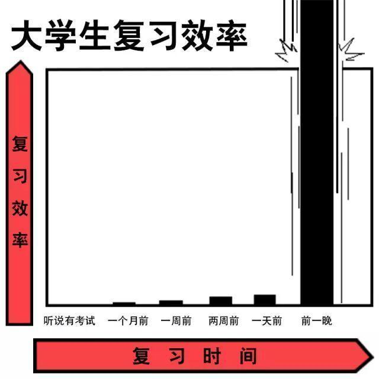
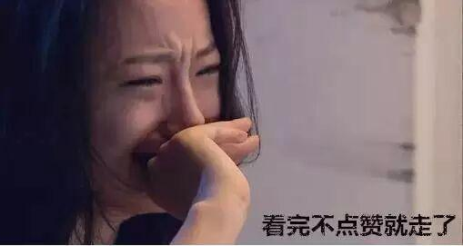

期末越近我越浪
正沉浸在开学的喜悦中无法自拔
就开始了一场又一场的期末考试
高中时，羡慕大学生考试及格就行
大学了，怀念高中不及格都行。
作弊该杀，挂科耻辱，士可杀而不可辱！
监考老师+地理位置+周边同学关系=期末考试成绩。
有的人死了，就不想让别人活，比如牛顿、莱布尼茨、拉格朗日……
筒靴们准备好开始预习了么...
复习的套路造么
>>>ONE MONTH AGO<<<
有什么着急的，考试还早着呢
考试是什么鬼
走，上网去啊
>>> TWO MONTH AGO<<<
着啥急，背完也得忘
都能过啊，下周看也来得及...
>>>ONE WEEK AGO<<<
这科挺水的，一定没问题。
这科挺难的，题一定简单。
一复习就不开心了
一不开心就不复习了
一不复习就开心了
一开心一天就过去了
>>>ONE DDAY AGO<<<
明天就要考试了呀
要考什么？怎么考？
今天是最后一天！？
学霸，给画个重点呗
拿我的去看吧
学霸，你不复习了?
嗯，看烦了都
卧槽我还没看完书，明天一定要努力。
>>>THE NIGHT BEFORE<<<
今晚一起去图书馆啊？
你们先睡吧，今夜我要战死大理工！
没想到熬过了高考
却死在了大学期末考
直观一点就是酱紫

据说考试前复习分四类
学霸的复习叫查缺补漏
中等的复习叫精卫填海
差点的复习叫女娲补天
而比较厉害“预习”的是
开天辟地
然鹅，学霸的模式那可是开了挂
吃饭睡觉图书馆吃饭睡觉图书馆吃饭睡觉图书馆吃饭睡觉图书馆吃饭睡觉图书馆吃饭睡觉图书馆吃饭睡觉图书馆吃饭睡觉图书馆吃饭睡觉图书馆吃饭睡觉图书馆吃饭睡觉图书馆吃饭睡觉图书馆吃饭睡觉图书馆吃饭睡觉图书馆吃饭睡觉图书馆吃饭睡觉图书馆吃饭睡觉图书馆吃饭睡觉图书馆吃饭睡觉图书馆吃饭睡觉图书馆吃饭睡觉
每年的期末你都会明白这样一句话：只要专业选的好，年年期末像高考。
每个人的大学都有一段特别的日子：过得还不如高中生，每天学的内容比高中生还多，睡得比高中生还晚，考试比高中生还紧张。
而毕业后你会觉得，如果所有的事情都可以像大学期末考之前通个宵就能解决那样就好了。
你以为你靠得住学霸？
大学期末考试。几个人怂恿我们班学霸传答案。出考场后，众人纷纷问学霸：“为啥少一个，最后一题你是不是不会？”学霸淡定的回答了句：“第一题不会……”
备战期末考，你打算用哪种姿势？躺着、趴着、坐着、站着，还是跪着？来调整个正确又舒服的姿势吧！
最后
小编要说
千万不要作弊
小编祝泥萌期末考试红红火火恍恍惚惚！
为了无悔的青（han）春（jia）！开始复习吧！
电协信息部 白金朋

电子技术与应用协会
微信ID:sylgdzxh